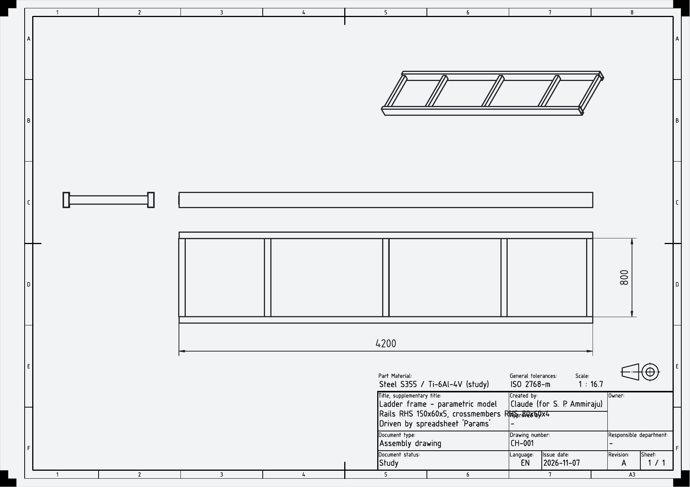
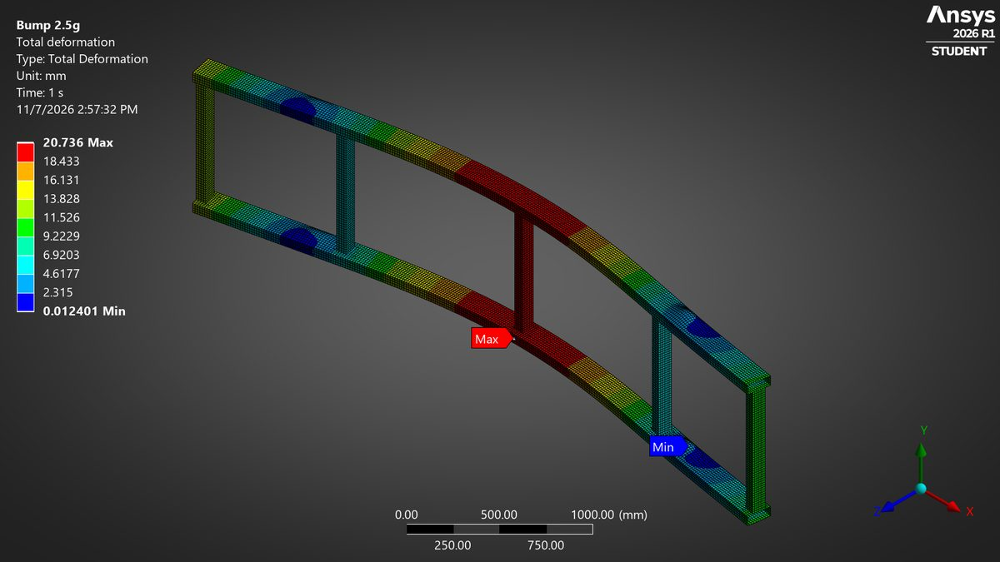
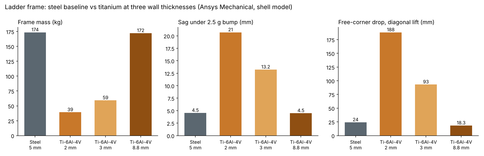

77% lighter, or 1% lighter: it depends on what limits the frame.
Compare S355 steel and Ti-6Al-4V for a 4.2 m truck ladder frame, and find out how much weight titanium really saves.
Parametric CAD in FreeCAD driven by a spreadsheet. Quadratic shell mesh (about 72,000 nodes) in ANSYS Mechanical under a 2.5 g bump, a 1 g diagonal wheel lift and eigenvalue buckling. Four wall thicknesses, checked against hand beam calcs.
At equal strength titanium is 77% lighter (174 kg to 39 kg). At equal stiffness it saves only 1% (172 kg), because its modulus is 57% of steel's. The thin frame also sags 4.6 times more. FEA matched hand calcs within 3 to 4%.
| Design | Walls | Mass | Worst-case SF | Bump sag |
|---|---|---|---|---|
| Steel S355 | 5 mm | 174 kg | 3.4 | 4.5 mm |
| Ti-6Al-4V | 2 mm | 39 kg | 3.1 | 20.7 mm |
| Ti-6Al-4V | 3 mm | 59 kg | 5.1 | 13.2 mm |
| Ti-6Al-4V | 8.8 mm | 172 kg | 17 | 4.5 mm |


